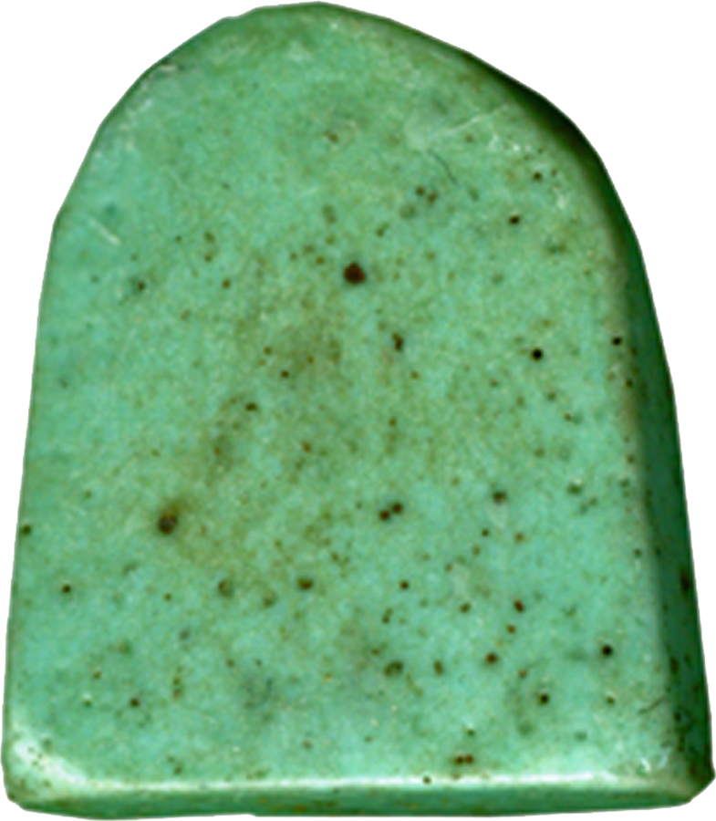

Таурт

Таурт (Тауэрт, «Великая») — охранительница в образе бегемотихи. Её тело соединяет самое опасное в Египте: беременную бегемотиху, свирепую защиту потомства; львиные лапы — скорость удара; крокодильий хвост — воду и зуб; человеческие руки, сложенные в жест почтения. Всё это страшное и мощное обращено не против человека, а за него — против злых сил, подкрадывающихся к матери и ребёнку.
Вместе с Бесом она — главная пара домашних защитников: где Бес бережёт сон и порог, Таурт держит круг вокруг ложеродильницы. Её имени не вырезают в грандиальных залах храмов — его носят на теле: амулеты фаянсовые и золотые, кольца, пластины на пеленах младенцев.
Почему бегемотиха
Египтяне наблюдали природу точно: бегемотиха — одно из самых опасных животных Нила, но никогда не бросает детёныша. Богиня-мать в самой свирепой своей ипостаси — лучшая стража у колыбели. Беременные женщины надевали её амулеты, чтобы «она родила легко, как бегемотиха в топи», а после родов благодарили её сосудами пива — напитков, освящённых её именем.
Клинические стены
В «родильных капеллах» — мàmиси — при храмах (самая известная сохранилась при Луксорском храме) стены красили сценами родов с Таурт в центре: она стоит у изголовья с саз-жезлом — символом охраны, рядом Бес играет на бубне, семь «Владычиц домов» склоняются над матерью. Роды считались путешествием в иной мир не менее опасным, чем Дуат, — и охрану к ним подбирали соответствующую.
Звезда северного неба
Астрономы Храма знали Таурт и на небе: созвездие Бегемотихи у полюса (область современного Дракона) она — «владычица северного неба», опора Нут: четыре столпа неба упираются в неё. Пока она стоит у полюса, звёздный порядок держится, и мёртвые (которые — к северу) не падают.
В загробном деле
В «Книге мёртвых» Таурт участвует в воскрешении: её «магические кирпичи» подкладывают под ложа мумии при отверзании уст; она — одна из богинь, что «собирают кости» и подают воздух жизни. В сценах Суда она стоит среди свидетельств, а её имя входит в формулы защиты тела от распада.
Интересные факты
- «Таурт» — не единственное имя: «Великая», «Мать матерей», «Та-ур», в греко-римское время — «Тюри» в астрологических папирусах.
- Амулеты Таурт — один из самых массовых археологических находок бытового благочестия: тысячи фаянсовых фигурок от Среднего Царства до Птолемеев.
- Её жезл «саз» — связка папируса с петлёй — тот же знак, что держит Исида: знак жизни и охраны женщины.
- На «волшебных ножах» Нового Царства (харпокрацийских лезвиях) Таурт рядом с Хатор и Бесом: процессия охранителей против духов ночи.